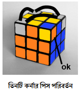

আগের অংশটি ঠিকভাবে করতে পারলে দেখবেন উপরের লেয়ারের কর্নারগুলোর প্রতিটিতে হলুদ আছে কিন্তু কোনটিই ঠিকভাবে নেই। আবার আরেক্তু ভালো করে লক্ষ্য করলে দেখবেন কর্নারগুলো ঠিক জায়গাতেও নেই। এই অংশে আমরা কর্নারগুলোকে ঠিক জায়গায় আনবো।
প্রথমে লক্ষ্য করুন কোন কর্নারটি ঠিক জায়গামত আছে।
কেস ১: একটা কর্নার জায়গামত পেলে সেটিকে চিত্রের মতো করে নিচে ডানদিকে রাখুন। এরপর নিচের অ্যালগরিদমটি প্রয়োগ করুনঃ
U R U’ L’ U R’ U’ L
এই অ্যালগরিদমটি দেয়ার পরও যদি অন্য কর্নারগুলো জায়গামত না আসে তাহলে ওই অ্যালগরিদমটি পুনরায় দিন। এবার দেখবেন কর্নারগুলো জায়গামত চলে এসেছে।
কেস ২: এক্ষেত্রে দেখবেন কোন কর্নারই জায়গামত নেই। সেজন্য কেস ১ এর অ্যালগরিদমটি একবার দিন। দেখবেন এবার কেস ১ এর মতো একটা এজকে জায়গামত পাবেন। বাকিটা কেস ১ এর অনুরুপ।
